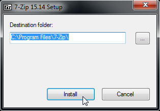

Instalační pokyny pro kurz
Budeme potřebovat Javu a programátorský textový editor IntelliJ IDEA.
Dobrá zpráva je, že nic nemusíte instalovat.
Všechno dohromady (a dokonce přednastavené) si můžete stáhnout z tohoto
ODKAZU
a jednoduše rozbalit do složky C:\Java-Training.
Opravdu je nutné rozbalit vše do C:\Java-Training.
V jiné složce (například na ploše nebo v uživatelském profilu) to fungovat
nebude.
Pro jistotu zde je obrázkový postup:
-
Klikněte na odkaz
Java-Training.7z
a potvrďte varování. Archív je v pořádku, chcete jej stáhnout.
-
Uložte soubor na plochu.
-
Dvakrát klikněte na tento soubor na ploše.
-
Pokud se archív úspěšně otevře jako na obrázku, přeskočte až k bodu 11.
-
Pokud se nic nestane, nemáte nainstalovaný archivační software 7zip. Musíte si jej stáhnout z adresy
www.7-zip.org

-
I tento soubor (7z1514-x64.exe) si nejprve uložte na plochu.
-
Dvojklikněte na 7z1514-x64.exe na ploše a spusťte instalaci.

-
Potvrďte bezpečnostní varování.
-
Potvrďte cílovou instalační složku.

-
Nyní když znovu kliknete na archív Java-Training.7z na ploše,
uvidíte okno jako v bodu 4.
-
Zvolte v záhlaví okna volbu Extract/Rozbalit

-
Aplikace 7 Zip se vás zeptá, kam chcete archív rozbalit. Zadejte C:\Java-Training.
Pokud jste vše udělali správně, můžete zkusit otevřít ukázkovou aplikaci a spustit ji.
-
Otevřete ve správci souborů (ikona Tento počítač) složku C:\Java-Training\IntelliJ-Community
-
Tím spustíte programátorský editor IntelliJ IDEA.
-
Otevřete ukázkový projekt
-
Najdete ho v C:\Java-Training\Projects\PrvniProjekt
-
Zvolte v pravo nahoře zelenou šipku Run
-
Měli byste vidět tuto malinkou aplikaci
Pokud se někde něco nepovede, nezoufejte. Na kurzu vám pomůžeme. V nejhoším případě můžete příklady zpracovávat na počítačích v učebně.